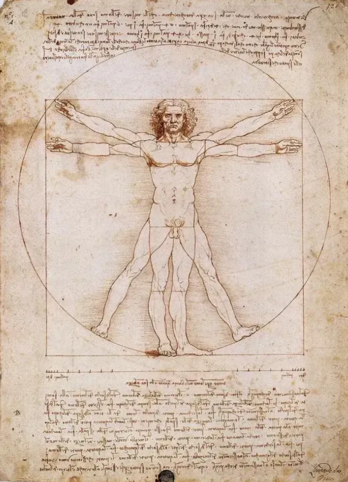

Humanismo
Valorização do ser humano, da razão e da capacidade de conhecer.

ARTE • HISTÓRIA • HUMANISMO
Uma viagem pelo período que transformou a maneira como o ser humano compreendia a arte, a ciência e a si mesmo.
Entre os séculos XIV e XVI, a Europa viveu uma profunda transformação cultural. A arte passou a observar o ser humano, a natureza e o conhecimento com novos olhos.
Explore as abas para conhecer o contexto histórico, as principais características e os dois grandes mestres apresentados neste trabalho.
O Renascimento não mudou apenas a forma de fazer arte; mudou também a maneira como o ser humano enxergava a si mesmo e o mundo ao seu redor.
— O espírito renascentistaValorização do ser humano, da razão e da capacidade de conhecer.
Arte, matemática, anatomia e observação passaram a caminhar juntas.
Perspectiva, proporção e equilíbrio transformaram a composição artística.
O movimento ganhou força em cidades como Florença, Veneza e Roma. O crescimento do comércio e das cidades criou novas oportunidades para artistas e intelectuais.
A burguesia e famílias poderosas passaram a financiar artistas. Ao mesmo tempo, o Humanismo valorizava a capacidade humana de pensar, investigar e criar.
Leonardo da Vinci e Rafael Sanzio tornaram-se símbolos de uma época em que arte, ciência, filosofia e observação da natureza se aproximaram.
O ser humano ocupa posição central, com atenção às emoções, ao corpo e à personalidade.
A matemática cria profundidade: elementos distantes parecem menores e os próximos, maiores.
Estudos do corpo ajudaram os artistas a representar músculos, proporções e movimentos.
Equilíbrio, geometria e harmonia passaram a organizar os elementos das composições.
Arquitetura, filosofia, mitologia e ideais clássicos foram retomados e reinterpretados.
A paisagem ganhou profundidade e detalhes, acompanhando o interesse pela observação.
Temas religiosos continuaram importantes, mas ganharam mais naturalidade e emoção.
Arte e ciência se aproximaram por meio da investigação, da experiência e da curiosidade.
1452 — 1519

Leonardo da Vinci foi um dos maiores representantes do Renascimento italiano. Não foi apenas pintor: estudou anatomia, matemática, engenharia, arquitetura, astronomia, mecânica e natureza.
Seu interesse por diferentes áreas fez dele um dos grandes exemplos do “homem renascentista”. Sua arte era marcada pela observação detalhada da natureza e do corpo humano.
Transições suaves entre luz e sombra, sem contornos rígidos, criando uma aparência delicada e natural.

Retrato de expressão enigmática, paisagem ao fundo e uso do sfumato. Reúne realismo, equilíbrio, perspectiva e atenção às emoções.

Representa o momento em que Jesus anuncia a traição de um dos discípulos. A perspectiva direciona o olhar para Jesus, enquanto gestos e expressões revelam diferentes emoções.

Homem inserido em um círculo e um quadrado, relacionando proporção, matemática, geometria, anatomia e arte.
1483 — 1520

Rafael Sanzio foi um dos grandes mestres do Renascimento italiano. Sua pintura ficou conhecida pela harmonia, equilíbrio, delicadeza e beleza das figuras.
Trabalhou principalmente em Florença e Roma, onde recebeu importantes encomendas. Destacou-se pela busca de uma composição considerada harmônica e ideal.
“Harmonia e equilíbrio como expressão de um ideal de beleza.”
✦
Filósofos da Antiguidade aparecem reunidos em um grande espaço arquitetônico. No centro estão Platão e Aristóteles, representando a valorização do conhecimento e da filosofia.

Maria segura o menino Jesus. A obra evidencia a habilidade de Rafael na representação de figuras humanas, expressões e composição equilibrada.

Maria e o menino Jesus aparecem acompanhados por São João Batista. A paisagem cria uma relação harmoniosa entre as figuras.
Dois caminhos diferentes para expressar os ideais do Renascimento.
Apesar das diferenças, ambos representam valores centrais do Renascimento: humanismo, conhecimento, equilíbrio, observação e valorização do ser humano.
✦Uma possível interpretação do grupo é que o Renascimento representa uma mudança na maneira como o ser humano enxergava a si mesmo e o mundo.
A arte passou a buscar maior proximidade com a realidade. O corpo humano, as emoções, a natureza e o conhecimento receberam maior atenção.
Leonardo demonstra a união entre arte e ciência, enquanto Rafael demonstra a busca pela harmonia e pelo equilíbrio.
Assim, o Renascimento pode ser interpretado não apenas como um período artístico, mas como uma transformação cultural que colocou o conhecimento, a razão e o ser humano em uma posição de grande importância.
O Renascimento foi um período fundamental para a história da arte e da cultura ocidental. Influenciado pelo Humanismo e pela cultura greco-romana, promoveu uma nova valorização do ser humano, da natureza, da ciência e do conhecimento.
Leonardo da Vinci e Rafael Sanzio foram dois dos principais representantes desse período. Leonardo destacou-se pela união entre arte, ciência e observação, enquanto Rafael ficou conhecido pela harmonia, equilíbrio e beleza de suas composições.
Obras como Mona Lisa, A Última Ceia, Homem Vitruviano e A Escola de Atenas demonstram como os artistas renascentistas procuravam representar o mundo de maneira mais realista, racional e humana.
“O Renascimento não mudou apenas a forma de fazer arte; mudou também a maneira como o ser humano enxergava a si mesmo e o mundo ao seu redor.”✦